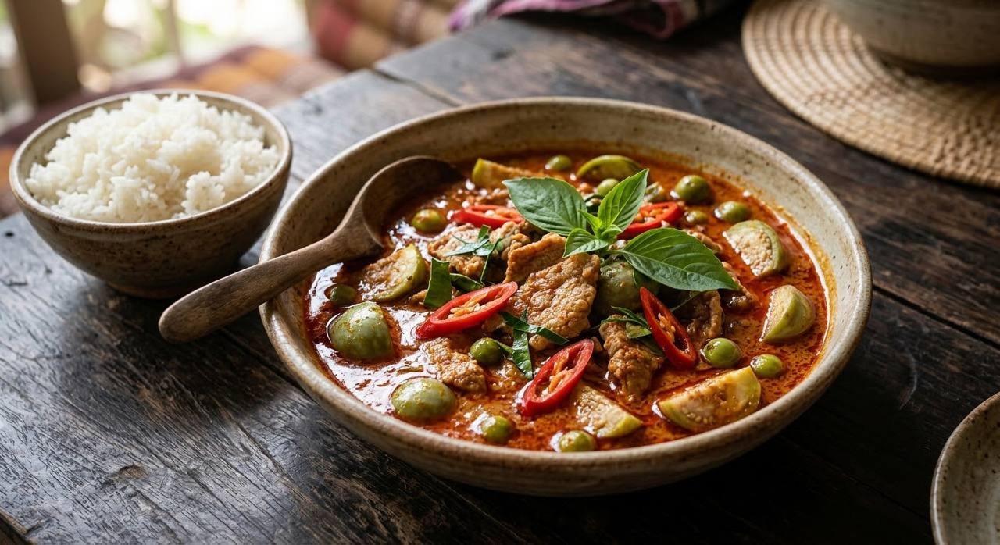

Dried chillies, not powder. Cracked coconut cream, not jar paste. Pork and aubergines, finished with basil and torn kaffir lime — the curry the UK knows as "red" and Thailand simply calls "spicy".

แกงเผ็ด means "spicy curry" — and it earns the name. The redness isn't tomato or powder: it comes from a paste of soaked dried chillies pounded from scratch. In Thailand this is the everyday curry, the one home cooks make on a Tuesday with pork or chicken, and the one that turns into kaeng phet pet yang — roast-duck red curry — when the occasion matters.
The heart of the dish is the technique. Coconut cream is simmered in the pan until it cracks — the oil splits out and the surface turns glossy red — and only then does the paste go in. Skip that step and the curry never develops its depth, no matter how good the paste is.
And the dish has an older name. Thai food historians record the original as kaeng daeng — "red curry" — built on duck, pineapple and pineapple juice, with a paste enriched with mace, nutmeg and cumin. The modern version dropped the fruit and kept the heat. Both are documented below.
| Thai | English | Amount |
|---|---|---|
| The paste (makes extra — keeps about a week, refrigerated) | ||
| พริกจินดาแห้ง (แช่น้ำ) | Dried jinda chillies, soaked soft | 100–120 g |
| ลูกผักชี | Coriander seeds | 2 tbsp |
| พริกไทยขาว | White peppercorns | 10 |
| รากผักชี (สับ) | Coriander roots, chopped | 2 tbsp |
| ตะไคร้ (ซอย) | Lemongrass, sliced fine | 3 stalks |
| ข่า (ซอย) | Galangal, sliced | 4–5 pieces |
| ผิวมะกรูด (สับ) | Kaffir lime zest, chopped | 2 tsp |
| หอมแดง | Shallots | 80 g |
| กระเทียม | Garlic | 60 g |
| กะปิ | Shrimp paste | 1 tsp |
| เกลือ | Salt | 1 tsp |
| The curry | ||
| เนื้อหมู | Pork shoulder or loin, bite-size | 300 g |
| กะทิ | Coconut milk — 2 tins; reserve 200 ml of the thick cream to crack | 800 ml |
| มะเขือเปราะ | Thai apple aubergines, quartered | 4 |
| มะเขือพวง | Pea aubergines | 50 g |
| พริกชี้ฟ้าแดง (ซอย) | Red spur chillies, sliced | 4–5 |
| ใบมะกรูด (ฉีก) | Kaffir lime leaves, torn | 5 |
| ใบโหระพา | Thai basil | 1 handful |
| น้ำตาลปี๊บ | Palm sugar | 2 tsp |
| น้ำปลา | Fish sauce — or 1½ tsp salt, the sources split | 1½ tbsp |
| น้ำมันรำข้าว | Rice bran oil — only if using the oil-fry method | 1 tbsp |
The older, richer character. To the same paste add 1 tsp mace (เปราะ), ¼ nutmeg (ลูกจันทน์) and 2 tsp cumin (ยี่หร่า), all dry-roasted before pounding. The curry itself takes 400 g roast duck, 100 g pineapple, 10 cherry tomatoes, 50 g pea aubergines and ½ cup pineapple juice — the fruit's sharp-sweet edge is what the modern version lost.
The recorded method cracks the head cream the same way: 1 cup head coconut cream cracked with 3 tbsp rice bran oil, the paste fried in it, the duck warmed through, then 3½ cups of thin coconut milk with the pineapple and juice simmered to order. Thai basil and kaffir lime leaves finish it, exactly as today.
If you can only try one restaurant version in Thailand, the roast-duck one is the one — it is the same dish in its Sunday clothes.
The paste's richness. The everyday market paste is chilli, coriander seed, lemongrass, galangal, shallot, garlic and shrimp paste. The recorded kaeng daeng paste adds mace, nutmeg and cumin. Neither is wrong — one is Tuesday, the other is festival day.
Crack vs fry. Maggi's Thai recipe cracks the cream first; the Wongnai home cook fries the paste in a spoon of oil first. Both work; the crack builds more depth.
Salt vs fish sauce. Home cooks genuinely split. Fish sauce adds savoury depth; salt keeps the chilli colour brighter. The recipe above gives both, honestly.
Sugar. From none in the strictest versions to three teaspoons in the sweetest. Palm sugar is the Thai choice — it rounds without a syrupy edge.
The pineapple question. The recorded kaeng daeng had pineapple and pineapple juice; modern kaeng phet has neither. Which one is "the real recipe" depends on which century you ask.
The protein. Pork and chicken are the everyday choices; roast duck is the classic; bamboo shoots and turkey berries swap in by region and by season.
This recipe is translated from the following Thai-language sources. Where they disagree, we've said so.
1. Wongnai (Janeojane) — "สูตร แกงเผ็ดหมูใส่มะเขือ พร้อมวิธีทำ" (home pork version, full method and seasoning) — wongnai.com
2. Kapook — "น้ำพริกแกงเผ็ด สูตรโฮมเมด" (the paste from scratch, exact quantities and pounding order) — cooking.kapook.com
3. Phol Food Mafia — "Roast Duck Red Curry (แกงเผ็ดเป็ดย่าง)" สูตรโดย อาจารย์ศรีสมร คงพันธุ์, from พลพรรคนักปรุง 6 January 2010 (the recorded kaeng daeng with mace, nutmeg, cumin and pineapple) — pholfoodmafia.com
4. Maggi Thailand — "แกงเผ็ดหมู" (crack-the-cream method, step order) — maggi.co.th